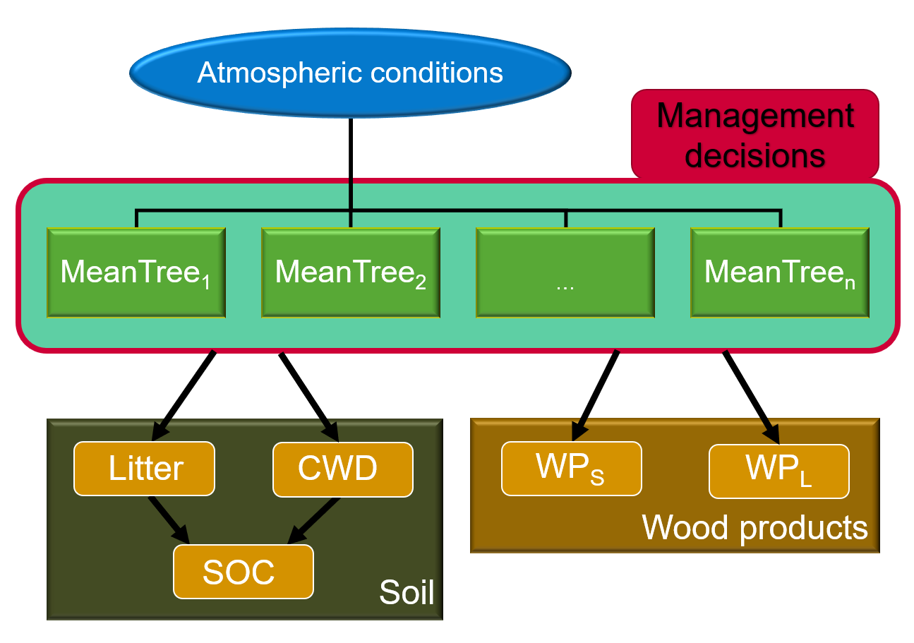

Boreal Forest Management Model (BFMM)#
… by Holger Metzler, Samuli Launiainen, and Giulia Vico
Top-level modules#
Helper functions to prepare a |
|
This module contains the |
|
Collection of type aliases used in the project. |
|
Module containing general utility functions. |
Global model components#
Subackage for Photosynthesis, see [1]. |
|
Subpackage for all trees in the stand. |
|
Subpackage for the soil carbon component. |
|
Subpackage for the wood-product carbon component. |
|
Subpackage for the management component. |
Run a simulation#
Subpackage for running a simulation. |
|
Overarching simulation parameters. |